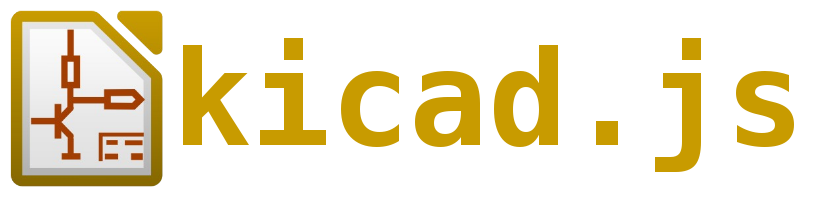

Update Footprint
(module SolderJumper-2_P1.3mm_Open_RoundedPad1.0x1.5mm (layer F.Cu) (tedit 5A3EAE8E) (descr "SMD Solder Jumper, 1x1.5mm, rounded Pads, 0.3mm gap, open") (tags "solder jumper open") (attr virtual) (fp_text reference REF** (at 0 -1.8) (layer F.SilkS) (effects (font (size 1 1) (thickness 0.15))) ) (fp_text value SolderJumper-2_P1.3mm_Open_RoundedPad1.0x1.5mm (at 0 1.9) (layer F.Fab) (effects (font (size 1 1) (thickness 0.15))) ) (fp_arc (start 0.7 -0.3) (end 1.4 -0.3) (angle -90) (layer F.SilkS) (width 0.12)) (fp_arc (start 0.7 0.3) (end 0.7 1) (angle -90) (layer F.SilkS) (width 0.12)) (fp_arc (start -0.7 0.3) (end -1.4 0.3) (angle -90) (layer F.SilkS) (width 0.12)) (fp_arc (start -0.7 -0.3) (end -0.7 -1) (angle -90) (layer F.SilkS) (width 0.12)) (fp_line (start -1.4 0.3) (end -1.4 -0.3) (layer F.SilkS) (width 0.12)) (fp_line (start 0.7 1) (end -0.7 1) (layer F.SilkS) (width 0.12)) (fp_line (start 1.4 -0.3) (end 1.4 0.3) (layer F.SilkS) (width 0.12)) (fp_line (start -0.7 -1) (end 0.7 -1) (layer F.SilkS) (width 0.12)) (fp_line (start -1.65 -1.25) (end 1.65 -1.25) (layer F.CrtYd) (width 0.05)) (fp_line (start -1.65 -1.25) (end -1.65 1.25) (layer F.CrtYd) (width 0.05)) (fp_line (start 1.65 1.25) (end 1.65 -1.25) (layer F.CrtYd) (width 0.05)) (fp_line (start 1.65 1.25) (end -1.65 1.25) (layer F.CrtYd) (width 0.05)) (pad 2 smd roundrect (at 0.65 0) (size 1 1.5) (layers F.Cu F.Mask)(roundrect_rratio 0.5)) (pad 1 smd roundrect (at -0.65 0) (size 1 1.5) (layers F.Cu F.Mask)(roundrect_rratio 0.5)) )
+
↑
←
↺
→
-
↓